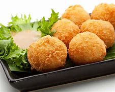

Paneer Cheese Balls Recipe

How to make Paneer Cheese Balls
Overview
This is a quick and easy snack which is perfect for weekend indulgence.
All you need paneer, onion, salt, paneer and mozzarella cheese.
- 10 Minute For Preparation
- Cooking Time 30 Minutes
- Recipe Servings 4 Peoples
Ingredients of Paneer Cheese Balls
- 200 gms paneer, grated
- 1/4 cup breadcrumbs
- 2 tbsp maida
- 2 tbsp cornflour
- 1/2 cup mozzarella cheese, grated
- 1 Onion, finely chopped
- 2 Green Chillies, finely chopped
- 2 tbsp coriander leaves, finely chopped
- 1 tsp ginger-garlic paste
- 1/2 tsp garam masala
- Salt to taste
How to Make Paneer Cheese Balls
- In a bowl, combine grated paneer, breadcrumbs, maida, cornstarch, chopped onion, green chillies, coriander leaves, ginger-garlic paste, mozzarella cheese, garam masala, and salt. Mix well and combine everything together until it forms a dough-like consistency.
- Take a small portion of the paneer mixture and roll it between your palms to form a smooth ball. Repeat this process with the remaining mixture.
- Now, heat oil in a kadhai set on medium heat. Carefully drop a few paneer balls into the oil and fry them until they turn golden brown and crispy.
- Once done, place them on a plate lined with kitchen towel to remove excess oil.
- Serve them hot as an appetiser or snack. Enjoy!